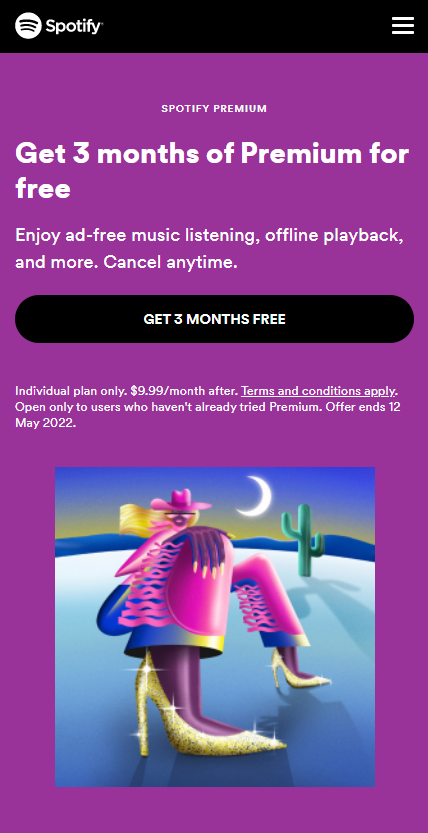
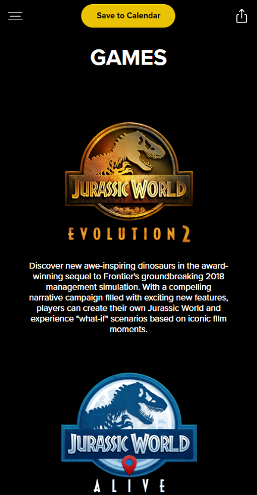
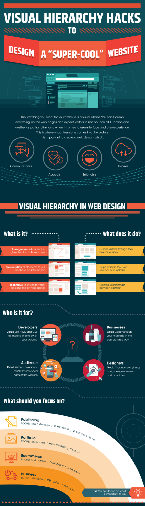

PARC: Alignment
Spotify
www.spotify.com/us/ Alignment simply refers to how elements are placed on a page. On this website, the designer introduces text in a natural way of reading, "for most countries" on the h1 header with the text "Get 3 months of Premium for free", most people will center it, and the word "free" will be in the middle of the screen. The same goes for all the other texts.
PARC: Contrast
Jurassic World games
www.jurassicworld.com/games/ Contrast is the tool that makes a design “pop”. On this website, the focus of the design is for the user to pay attention to the two types of games. With this contrast, designers are able to highlight elements they want to emphasize and it makes it easier for the user to choose where to go from there.
Visual Hierarchy
Zillion Designs
www.zilliondesigns.com/ Visual hierarchy is the method of arranging graphic elements by order of importance. Size plays an important role. It's one of the main ways to rank elements in a design. On this site, the designer introduced the main idea of the page, as you scroll down, the designer continues breaking down the main idea with questions and answers in a perfect sequence.